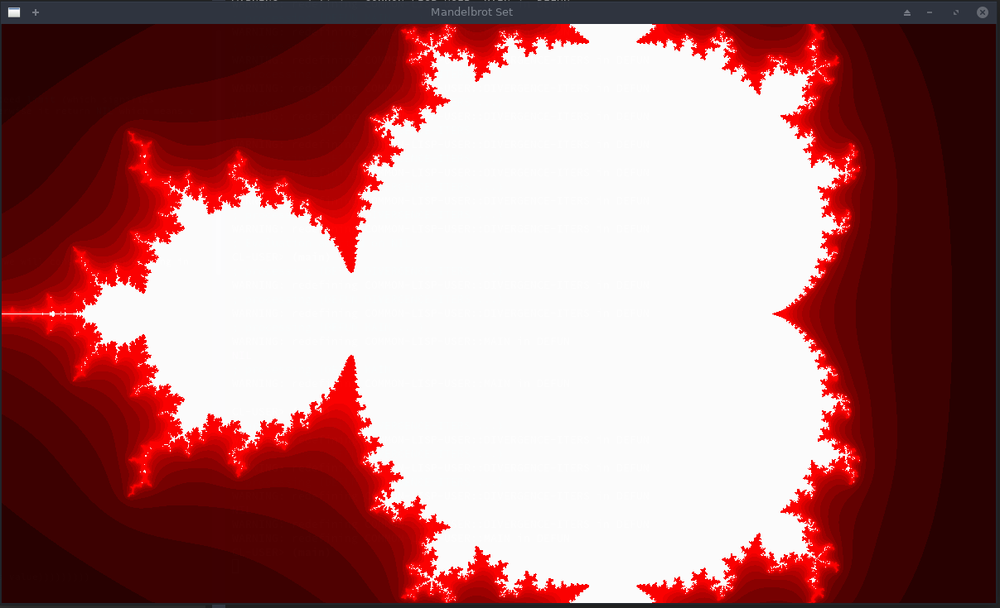

Mandelbrot Set Plotting in Common Lisp
Table of Contents
1. Definition
From Wikipedia:
The Mandelbrot set is the set of complex numbers \(c\) for which the function \(f_c(z)= z^2+c\) doesn't diverge when iterated from \(z=0\).
i.e. to check if the number c = 3+2i belongs to the Mandelbrot set, we iterate as follows:
- \(f_c(0) = c\)
- \(f_c(f_c(0)) = c^2+c\)
- \(f_c(f_c(f_c(0))) = (c^2+c)^{2} + c\)
- …
And if the final result is inifinty then \(c\) doesn't blong to Mandelbrot set.
2. Check if a complex c is in Mandelbrot set
< Collapse code block
(defun iterate (c iterations limit) (let ((f c)) (dotimes (iters iterations nil) (setf f (+ (expt f 2) c)) (when (> (abs f) limit) (return-from iterate iters)))))
ITERATE
This function iterates for maximum of iterations times and if the result of iterating with c exceed limit (which signifies divergence to infinity) then it returns the number of iterations it took for it to diverge. Otherwise it return NIL which means c belongs to Mandelbrot set.
< Collapse code block
(print (iterate (complex 0 0) 10 50)) (print (iterate (complex 1 1) 10 50))
NIL 2
So, 0+0i lies in mandelbrot set, while 1+1i takes 2 iterations of the value to exceed 50 (which we will consider as not being in Mandelbrot set)
3. Plotting the set
< Collapse code block
(defun divergence-iters (c) (iterate (* 2e-3 (- c #C(800 350))) 30 5)) (defun main () (sdl:with-init () (sdl:window 1200 700 :resizable t :title-caption "Mandelbrot Set") (setf sdl:*default-color* sdl:*black*) (sdl:initialise-default-font) (sdl:with-events () (:quit-event () t) (:idle () ;; Clear screen (sdl:clear-display sdl:*white*) ;; drawing (loop for x from 0 to 1200 do (loop for y from 0 to 700 for value = (divergence-iters (complex x y)) do (when value (sdl:draw-pixel-* x y :color (sdl:color :g 0 :b 0 :r (max 0 (min 255 (* 20 (abs value))))))))) (sdl:update-display)))))
MAIN
Here i subtracted 800 + 350i from position x+yi to center the plot and scaled it with 2e-3 so that we would be looking at something interesting rather than all black or red portion of the plot.

Figure 1: first-mandelbrot
See!! we did it! This was so easy. Lets look at how fast our code runs.
< Collapse code block
(defun timing (function) "Runs the given `function' and returns the seconds it took to run it" (let ((t1 (get-internal-real-time))) (funcall function) (/ (- (get-internal-real-time) t1) internal-time-units-per-second)))
This function will time any function, so I will extract the drawing loop from main function into draw function and print timing.
< Collapse code block
(defun draw () (loop for x from 0 to 1200 do (loop for y from 0 to 700 for value = (divergence-iters (complex x y)) do (when value (sdl:draw-pixel-* x y :color (sdl:color :g 0 :b 0 :r (max 0 (min 255 (* 20 (abs value)))))))))) (defun main () (sdl:with-init () (sdl:window 1200 700 :resizable t :title-caption "Mandelbrot Set") (setf sdl:*default-color* sdl:*black*) (sdl:initialise-default-font) (sdl:with-events () (:quit-event () t) (:idle () ;; Clear screen (sdl:clear-display sdl:*white*) ;; drawing (format t "~& Total :~,3f sec" (timing #'draw)) ;; updating display (sdl:update-display)))))
MAIN
Total :2.050 sec Total :1.960 sec Total :1.990 sec Total :1.960 sec Total :1.970 sec Total :1.970 sec Total :1.970 sec
It tooks about 2 second for each draw. We can do better.
4. Optimization
Lets add type declaration to iterate function and ensure that it gets passed values with correct type.
< Collapse code block
(defun iterate (c iterations limit) (declare (optimize (speed 3) (safety 0) (debug 0))) (declare ((complex single-float) c) (fixnum iterations) (single-float limit)) (let ((f c)) (declare ((complex single-float) f)) (dotimes (iters iterations nil) (setf f (+ (expt f 2) c)) (when (> (abs f) limit) (return-from iterate iters))))) (defun divergence-iters (c) (iterate (* 2e-3 (- c #C(800.0 350.0))) 30 5.0))
DIVERGENCE-ITERS
Total :0.550 sec Total :0.460 sec Total :0.460 sec Total :0.470 sec Total :0.460 sec Total :0.460 sec
Simply adding type declarations decreased the runtime by 4 times. This is one of the things I like about Common Lisp. You can quickly iterate with ideas then make it run faster later with not much effort.
Lets see if we can go little more further.
Note that these timing are for 30 iterations and with limit value of 5.0. When we zoom into the plot we will need to increase the iterations and these timing would change accordingly.
5. Parallel Computation
lparallel library can be used to run the computations in parallel.
< Collapse code block
(defparameter lparallel:*kernel* (lparallel:make-kernel 8)) (defparameter *width* 1200) (defparameter *height* 700) (defparameter *regions* (let ((stepx (/ *width* 2)) (stepy (/ *height* 4))) (loop for x0 from 0 to (- *width* stepx) by stepx with regions = nil do (loop for y0 from 0 to (- *height* stepy) by stepy do (push (mapcar (lambda (i) (truncate i)) (list x0 (+ x0 stepx) y0 (+ y0 stepy))) regions)) finally (return regions))))
*REGIONS*
My laptop has 8 cores, so I made 8 computation kernels and divided the screen into 8 regions (as shown in table below).
< Collapse code block
`(("X0" "X1" "Y1" "Y2") ,@(reverse *regions*))
| X0 | X1 | Y1 | Y2 |
| 0 | 600 | 0 | 175 |
| 0 | 600 | 175 | 350 |
| 0 | 600 | 350 | 525 |
| 0 | 600 | 525 | 700 |
| 600 | 1200 | 0 | 175 |
| 600 | 1200 | 175 | 350 |
| 600 | 1200 | 350 | 525 |
| 600 | 1200 | 525 | 700 |
Now I have to distribute the computation/draw part into 8 pieces. For that I modify the draw function as:
< Collapse code block
(defun draw% (x0 x1 y0 y1) (loop for x from x0 below x1 do (loop for y from y0 below y1 for value = (divergence-iters (complex x y)) do (when value (sdl:draw-pixel-* x y :color (sdl:color :g 0 :b 0 :r (max 0 (min 255 (* 20 (abs value)))))))))) (defun draw () (lparallel:pmap nil (lambda (region) (apply #'draw% region)) *regions*))
DRAW
Instead of map-ing over the *regions* we just lparallel:pmap. It simple as that to do parallel processing.
So lets see the results!
Total :0.560 sec Total :0.460 sec Total :0.470 sec Total :0.460 sec Total :0.450 sec
Huh!! Why no change?? This is because with just 30 iteration for each pixel, the overhead of drawing and parallizing is significant that that of computing. But all is not in vain. We will get the benefit of this when we need increase iterations while zooming into the plot. (There might be other mathematical techinques for computing mandelbrot set faster when zoomed in, but I didn't search)
< Collapse code block
(defun divergence-iters (c) (iterate (* 2e-3 (- c #C(800.0 350.0))) 3000 5.0))
DIVERGENCE-ITERS
Total :13.800 sec Total :13.590 sec Total :13.620 sec
Still no benefit!! Lets try decoupling drawing and computing and see if drawing pixels is the bottleneck.
6. Decoupling Drawing and Computing
< Collapse code block
(deftype color () '(unsigned-byte 8)) (defparameter *buffer* (make-array (list *height* *width* 3) :element-type 'color)) (defun compute% (x0 x1 y0 y1) (loop for x from x0 below x1 do (loop for y from y0 below y1 for value = (divergence-iters (complex x y)) do (if value ;; when not in set, color the pixel (setf (aref *buffer* y x 0) (max 0 (min 255 (* 20 (abs value)))) (aref *buffer* y x 1) 0 (aref *buffer* y x 2) 0) ;; when in set, just set to white color (setf (aref *buffer* y x 0) 0 (aref *buffer* y x 1) 0 (aref *buffer* y x 2) 0))))) (defun compute () (lparallel:pmap nil (lambda (region) (apply #'compute% region)) *regions*)) (defun draw () (loop for x from 0 below *width* do (loop for y from 0 below *height* do (sdl:draw-pixel-* x y :color (sdl:color :r (aref *buffer* y x 0) :g (aref *buffer* y x 1) :b (aref *buffer* y x 2))))))
DRAW
I have now created *buffer* variable to hold the pixel colors. Then separated the computation and drawing part.
Let modify main function to use this setup.
< Collapse code block
(defun main () (sdl:with-init () (sdl:window 1200 700 :resizable t :title-caption "Mandelbrot Set") (setf sdl:*default-color* sdl:*black*) (sdl:initialise-default-font) (sdl:with-events () (:quit-event () t) (:idle () ;; Clear screen (sdl:clear-display sdl:*white*) ;; drawing (format t "~& Computation :~,3f sec" (timing #'compute)) (format t "~& Drawing :~,3f sec" (timing #'draw)) ;; updating display (sdl:update-display)))))
MAIN
Computation :3.480 sec Drawing :0.340 sec Computation :3.070 sec Drawing :0.360 sec Computation :3.030 sec Drawing :0.350 sec Computation :3.360 sec Drawing :0.350 sec Computation :3.310 sec Drawing :0.350 sec Computation :3.500 sec Drawing :0.350 sec
From 13 seconds to around 3.3 seconds! Its good. Seems like drawing a pixel is a blocking activity or something like that (I din't dig into it further). So, performing all computation in different cores then drawing all at onces is better.
7. Lets add translation and scaling!
< Collapse code block
(defparameter *scale* 3e-3) (defparameter *translation* (complex 0 0)) (defun divergence-iters (c) (iterate c 30 50.0)) (defun transform (x y) (declare (optimize (speed 3) (safety 0) (debug 0))) (declare (fixnum x y) ((complex fixnum) *translation*) (single-float *scale*)) (+ *translation* (complex (* *scale* (the fixnum (- x 800))) (* *scale* (the fixnum (- y 350)))))) (defun compute% (x0 x1 y0 y1) (loop for x from x0 below x1 do (loop for y from y0 below y1 for value = (divergence-iters (transform x y)) do (if value ;; when not in set, color the pixel (setf (aref *buffer* y x 0) (max 0 (min 255 (* 20 (abs value)))) (aref *buffer* y x 1) 0 (aref *buffer* y x 2) 0) ;; when in set, just set to white color (setf (aref *buffer* y x 0) 0 (aref *buffer* y x 1) 0 (aref *buffer* y x 2) 0))))) (defun main () (sdl:with-init () (sdl:window 1200 700 :resizable t :title-caption "Mandelbrot Set") (setf sdl:*default-color* sdl:*black*) (sdl:initialise-default-font) (sdl:enable-key-repeat 100 10) (sdl:with-events () (:quit-event () t) (:key-down-event (:key key) (case key (:sdl-key-q (sdl:push-quit-event)) (:sdl-key-l (setf *scale* (* *scale* 1.2))) (:sdl-key-k (setf *scale* (/ *scale* 1.2))) (:sdl-key-a (incf *translation* (* *scale* #C(-20 0)))) (:sdl-key-d (incf *translation* (* *scale* #C(20 0)))) (:sdl-key-w (incf *translation* (* *scale* #C(0 -20)))) (:sdl-key-s (incf *translation* (* *scale* #C(0 -20)))))) (:idle () ;; Clear screen (sdl:clear-display sdl:*white*) ;; drawing (format t "~&Calculate : ~,3f sec" (timing #'compute)) (format t "~&Draw : ~,3f sec" (timing #'draw)) (sdl:update-display)))))
MAIN
*scale* and *translation* hold the current transformation, compute% uses transform function to transform x,y to desired complex number and finally main is update to respond to certain key-presses for translation and scaling.
Calculate : 0.250 sec Draw : 0.430 sec Calculate : 0.050 sec Draw : 0.350 sec Calculate : 0.050 sec Draw : 0.360 sec Calculate : 0.050 sec Draw : 0.370 sec Calculate : 0.050 sec Draw : 0.370 sec
This is all good! But I am still not happy with the 350ms it takes to draw each frame. We will have to directly access the surface buffer to write pixel colors in bulk. But lispbuilder-sdl doesn't directly provide this feature (or at least I don't know that), rather lispbuilder-sdl requires us to use opengl.
8. OpenGL
< Collapse code block
(defparameter *buffer-base* (make-array (* *height* *width* 3) :element-type 'color)) (defparameter *buffer* (make-array (list *height* *width* 3) :element-type 'color :displaced-to *buffer-base*)) (defun draw () (gl:draw-pixels *width* *height* :rgb :unsigned-byte *buffer-base*))
DRAW
cl-opengl's draw-pixels takes five arguments width and height of the data, format of pixel data (we have rgb), and type of data (unsigned-bytes). Also note that it expects a simple-vector i.e. a one-dimensional array. But our *buffer* was a multidimensional array. Here the displaced-array feature of Common Lisp comes to rescue. I created a 1d array (*buffer-base*) of size width * height * 3 then defined *buffer* as a 3d array displaced to that array. This way we won't have to change the code we wrote before.
Finally, we change main and tell sdl to allow us to use opengl.
< Collapse code block
(defun main () (sdl:with-init () (sdl:window 1200 700 :resizable t :title-caption "Mandelbrot Set" :opengl t) ...))
9. Finally Result
- See my GitHub for the full code.
- See this screen recording for the result. (The code that appears in the video is not this final version, so it has slightly different function names somewhere, otherwise its all the same)
10. Final Code
< Collapse code block
(ql:quickload :lispbuilder-sdl) (ql:quickload :cl-opengl) (ql:quickload :lparallel) (defparameter *width* 1200) (defparameter *height* 700) (defparameter *scale* 3e-3) (defparameter *translation* (complex 0 0)) ;; initialize 8 lparallel kernels (defparameter lparallel:*kernel* (lparallel:make-kernel 8)) (defparameter *regions* (let ((stepx (/ *width* 2)) (stepy (/ *height* 4))) (loop for x0 from 0 to (- *width* stepx) by stepx with regions = nil do (loop for y0 from 0 to (- *height* stepy) by stepy do (push (mapcar (lambda (i) (truncate i)) (list x0 (+ x0 stepx) y0 (+ y0 stepy))) regions)) finally (return regions)))) (deftype color () '(unsigned-byte 8)) (defparameter *buffer-base* (make-array (* *height* *width* 3) :element-type 'color)) (defparameter *buffer* (make-array (list *height* *width* 3) :element-type 'color :displaced-to *buffer-base*)) ;;; Mandelbrot Set Computations (defun iterate (c iterations limit) (declare (optimize (speed 3) (safety 0) (debug 0))) (declare ((complex single-float) c) (fixnum iterations)) (let ((f c)) (declare ((complex single-float) f) (single-float limit)) (dotimes (iters iterations f) (setf f (+ (expt f 2) c)) (when (> (abs f) limit) (return-from iterate iters))) nil)) (defun divergence-iters (c) "Number of iterations it took for `c' to diverge. NIL for `c' that belongs to madelbrot set" (iterate c 30 50.0)) (defun transform (x y) (declare (optimize (speed 3) (safety 0) (debug 0))) (declare (fixnum x y) ((complex fixnum) *translation*) (single-float *scale*)) (+ *translation* (complex (* *scale* (the fixnum (- x 800))) (* *scale* (the fixnum (- y 350)))))) (defun compute% (x0 x1 y0 y1) (loop for x from x0 below x1 do (loop for y from y0 below y1 for value = (divergence-iters (transform x y)) do (if value ;; when not in set, color the pixel (setf (aref *buffer* y x 0) (max 0 (min 255 (* 20 (abs value)))) (aref *buffer* y x 1) 0 (aref *buffer* y x 2) 0) ;; when in set, just set to white color (setf (aref *buffer* y x 0) 0 (aref *buffer* y x 1) 0 (aref *buffer* y x 2) 0))))) (defun compute () (lparallel:pmap nil (lambda (region) (apply #'compute% region)) *regions*)) ;;; Drawing (defun draw () (gl:draw-pixels *width* *height* :rgb :unsigned-byte *buffer-base*)) (defun timing (function) (let ((t1 (get-internal-real-time))) (funcall function) (/ (- (get-internal-real-time) t1) internal-time-units-per-second))) (defun main () (sdl:with-init () (sdl:window 1200 700 :resizable t :title-caption "Mandelbrot Set" :opengl t) (setf sdl:*default-color* sdl:*black*) (sdl:initialise-default-font) (sdl:enable-key-repeat 100 10) (sdl:with-events () (:quit-event () t) (:key-down-event (:key key) (case key (:sdl-key-q (sdl:push-quit-event)) (:sdl-key-l (setf *scale* (* *scale* 1.2))) (:sdl-key-k (setf *scale* (/ *scale* 1.2))) (:sdl-key-a (incf *translation* (* *scale* #C(-20 0)))) (:sdl-key-d (incf *translation* (* *scale* #C(20 0)))) (:sdl-key-w (incf *translation* (* *scale* #C(0 -20)))) (:sdl-key-s (incf *translation* (* *scale* #C(0 -20)))))) (:idle () ;; Clear screen (sdl:clear-display sdl:*white*) ;; drawing (format t "~&Calculate : ~,3f sec" (timing #'compute)) (format t "~&Draw : ~,3f sec" (timing #'draw)) (sdl:update-display)))))